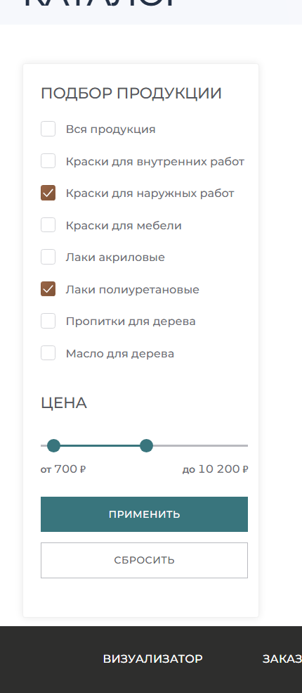
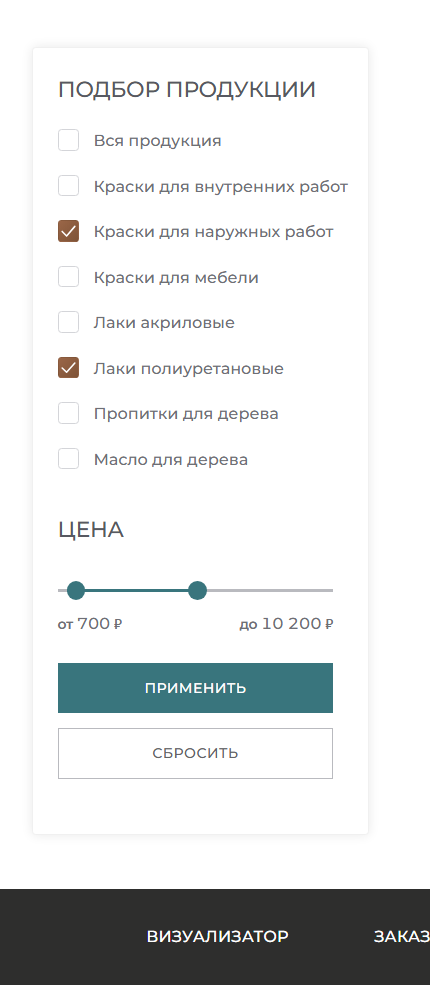
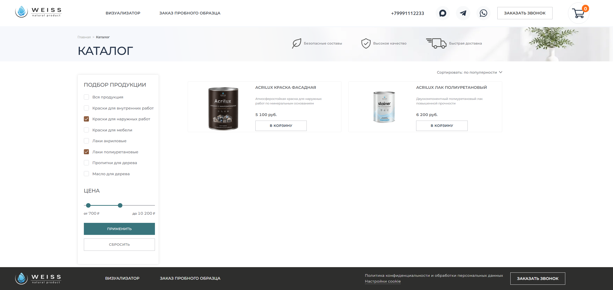
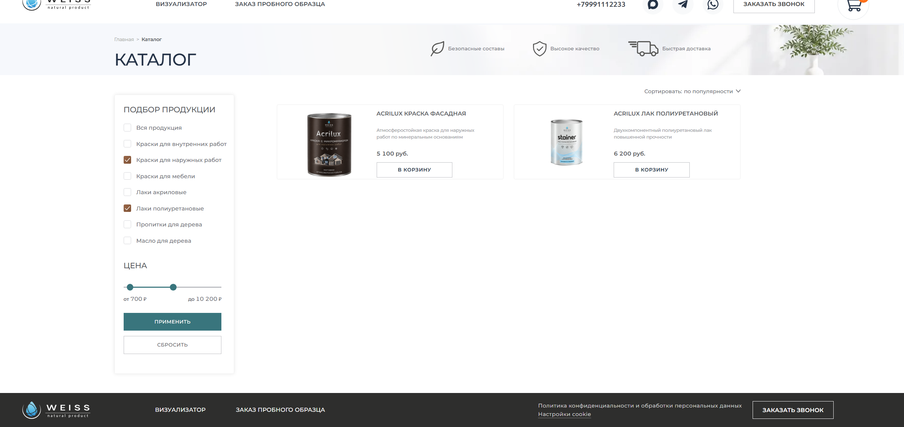
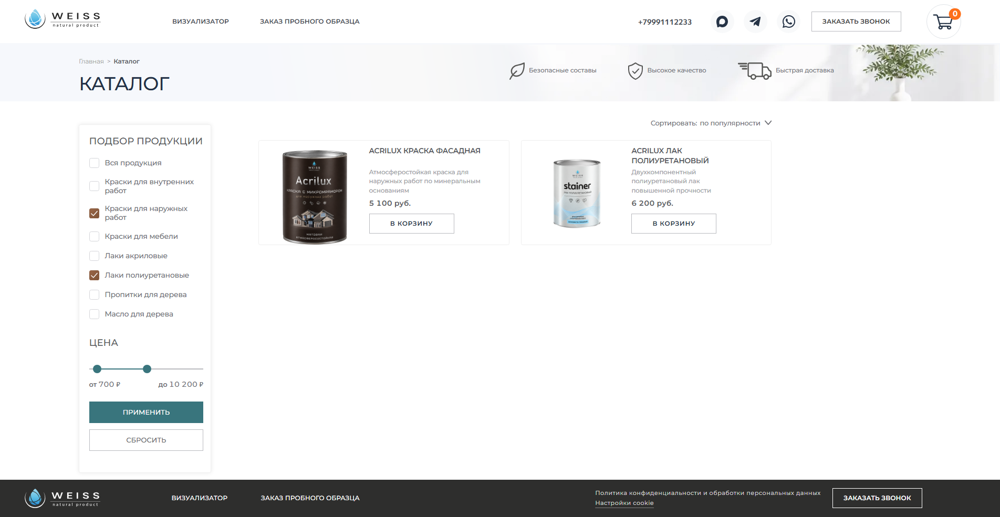
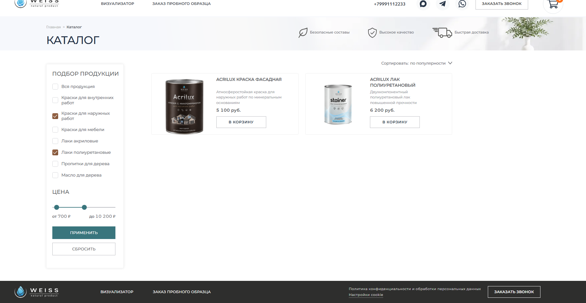

Две правки: (1) при одной странице товаров под карточкой фильтра не было отступа до подвала; (2) внутреннее поле справа было меньше левого — кнопки упирались в кромку. Скриншоты headless Chrome, страница проскроллена к подвалу.
Фильтр: «Краски для наружных работ» + «Лаки полиуретановые», 2 товара — пагинации нет. В макете М15 карточка 224..601, кнопки и ползунок 252..562 (зазор 39 до кромки), подписи доходят до 580.


Тот же фильтр. Раньше белая полоса каталога заканчивалась ровно на кромке карточки — она касалась подвала.


На 1920 правый отступ карточки тоже был 15 px при 20 слева — на глаз кнопки стояли вплотную к кромке.


| Место | Было | Стало |
|---|---|---|
| Поле карточки справа (2560) | 16 px | 21 px (макет: 21) |
| Зазор кнопок и ползунка до кромки (2560) | 16 px | 39 px (макет: 39) |
| Длинные подписи на 2560 | 1 строка | 1 строка (8 из 8) |
| Низ фильтра → подвал (2560, одна страница) | 12 px | 54 px (60 в масштабе 1:1) |
| Низ фильтра → подвал (1920, одна страница) | 12 px | 41 px |
Отступ снизу равен нижнему полю полосы пагинации: на 2560 — 71 px при масштабе 1:1, ниже — 40..61 px. Когда товаров больше одной страницы, пагинация на месте и ничего не меняется.
| Проверка | Результат |
|---|---|
| Каталог с пагинацией (6 товаров), 2560 / 1920 | не изменился, пагинация по-прежнему у подвала |
| Подписи чекбоксов на 2560 (innerWidth 2544) | 8 из 8 в одну строку |
| Ширины 1281 / 1280 / 1024 / 768 / 390 | горизонтальная панель фильтра не затронута, переполнения нет |
| Статическая сборка (pages/catalog.html) | то же, что в WordPress |
| Прод weiss-color.vercel.app | совпадает с локальной сборкой (кнопки 300..594, карточка 273..632) |
Правило в css/catalog.css: .catalog:last-child (нижний отступ без пагинации) и --filter-gutter внутри .filter (зазор кнопок и ползунка).